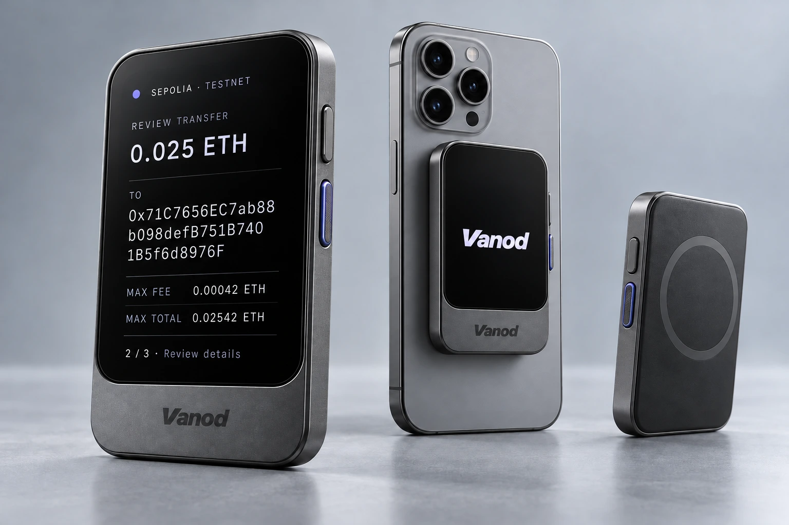

先看清，再行动
K 线、盘口与最新报价，在同一个工作区。
现货体验 · 独立钱包 · 你的选择
当前开放模拟交易，暂不接收真实资金关注价格变化，找到你的下一步。
| 资产 | 最新价格 / USD | 24H 涨跌 | 24H 趋势 | 操作 |
|---|---|---|---|---|
| 正在读取 BTC、ETH、SOL 行情… | ||||
Coinbase 公开市场 · 约 30 秒更新
Slate 磁吸硬件钱包的设计，将交易确认放在独立屏幕上。完整地址、网络、金额与费用，逐项看清，再按下确认。

清晰的交易界面，让每次操作都有回应。
K 线、盘口与最新报价，在同一个工作区。
体验市价买卖、限价挂单与撤单，记录保存在本机。
保存完成后再给出确认，失败不会显示成功对勾。
正式安装包发布后，将在这里提供下载。